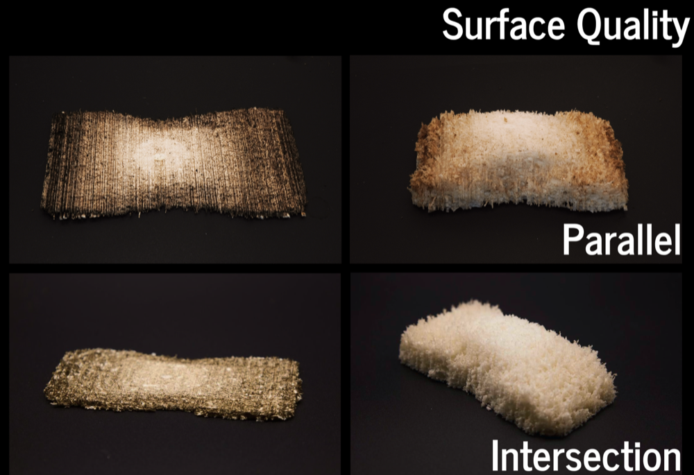

Surface Quality
Early tests showed that if all scan paths are done in the same direction (e.g., along the X-axis), the processed surface develops noticeable parallel grooves. When the material absorbs water and expands, these grooves amplify, causing the surface to appear uneven with ridged or striped patterns. To reduce this issue, using a cross-path scanning strategy (where adjacent scan paths are perpendicular to each other) significantly reduces the striped structure, leading to a much smoother and more even surface quality.

Surface Quality Comparison
Process
- Choose the Scan Direction: Decide if you want to use a single direction or a cross-path strategy.
- Test with Single Direction: Perform an initial test with all scan paths aligned in the same direction (e.g., X-axis).
- Evaluate Surface Quality: Check the surface for grooves and texture issues after the expansion.
- Implement Cross-Path Scanning: Adjust the settings to use cross-path scanning where adjacent paths are perpendicular.
- Test and Compare: Compare the surface quality after applying cross-path scanning, ensuring a smoother finish with less visible ridging.
- Finalize Settings: Adjust laser cutting paths for optimal surface quality based on the results of your tests.